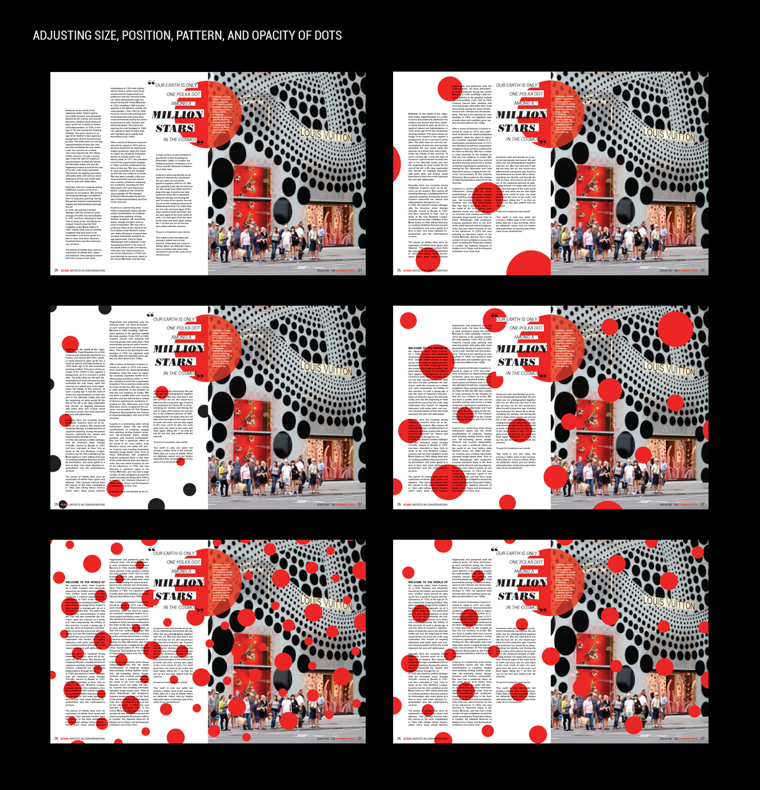

As an art lover and particular fan of contemporary artist Yayoi Kusama's red polka dot motif, I designed a series of editorial layouts in print and digital forms. The article text is compiled from three separate interviews with Kusama and presented as a BOMB Magazine piece.
INITIAL CONCEPTS
I began by experimenting with arguably Kusama's most well-known visuals: the Infinity Mirror Rooms, the Obliteration Room, and the red and white dot motif. Though photos of the mirror room are stunning, using them throughout an article would overwhelm the copy and make it tricky to work in differing visuals. The Obliteration Room was more promising, but the red and white dots was ultimately the correct direction. I landed on the dots as an undeniably recognizable element that could adapt around my content while still giving it room to breathe on the later spreads.
EXPLORATION
As soon as I moved onto the article copy and began building spreads that established patterns and systems of hierarchy, I realized that in order to find the perfect combination of colors, dots, pull quotes, pictures, and text columns, I was going to have to do some major exploration. Even though I was working within almost exclusively black, white and red, it took a huge number of iterations of every spread I worked on to figure out the best combination of colors and shapes for each layout.


CONTINUED EDITS
From countless layout options, a rhythm eventually emerged between the dots and the columns of text that spanned all three spreads. I pulled back to consider the full article as a visual journey and carefully choose the right photos and pull quotes.
TABLET VERSION
I decided to explore a digital version of the article through a tablet simulation. I designed a user interface for my fictionalized BOMB Magazine website and built a web-optimized article to scroll through. The sim features images that appear as the user scrolls, a rating feature and "recommended" menu at the bottom, and a dot pattern moving calmly in the page background.